IFS
branding, UI
Création de moments signatures marquants à déployer en avant-vente pour que IFS se différencie, face à des concurrents beaucoup plus gros et à la notoriété établie. Consolidation et design de 3 idées retenues par l'équipe : la conception d'une chaîne IFS TV qui réunie du contenu de la filiale France ; la mise en place d'événements physiques réguliers autour de problématiques métiers, qui se traduit par le déploiement d'une affiche et de publications de posts ; et la matérialisation de la FIKA box, une boîte qui créée un moment de signature marquant, lors d'un premier échange entre le commercial et le prospect.
Projet conduit avec le planneur stratégique au sein de l'atelier LOUIS ZERO à Paris, septembre 2022.
IFS France needs to differentiate itself from much larger competitors with an established reputation. We've been asked to think about signature moments to be deployed in pre-sales to leave an unique impression. Design of 3 ideas retained by the team: design of an IFS TV channel that gathers content from the French subsidiary; the programming of events about business issues, with the design of a poster and social media posts; and the design of a box called the Fika Box with a set of cards for the salesperson to discuss and to leave to the prospective customer.
Projet deployed with our Strategic planner at LOUIS ZERO agency in Paris, September 2022.
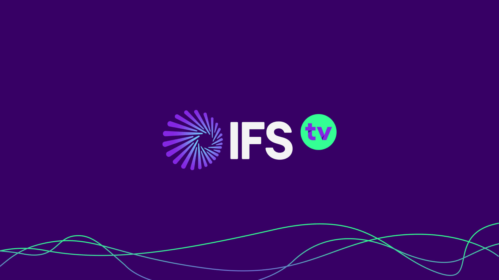
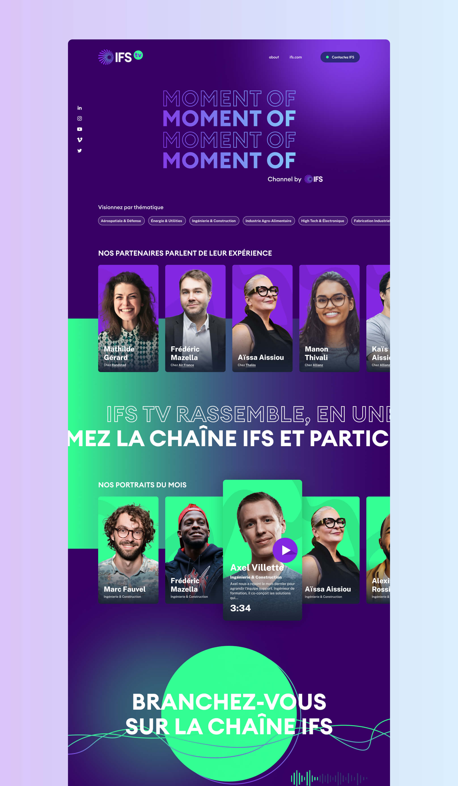
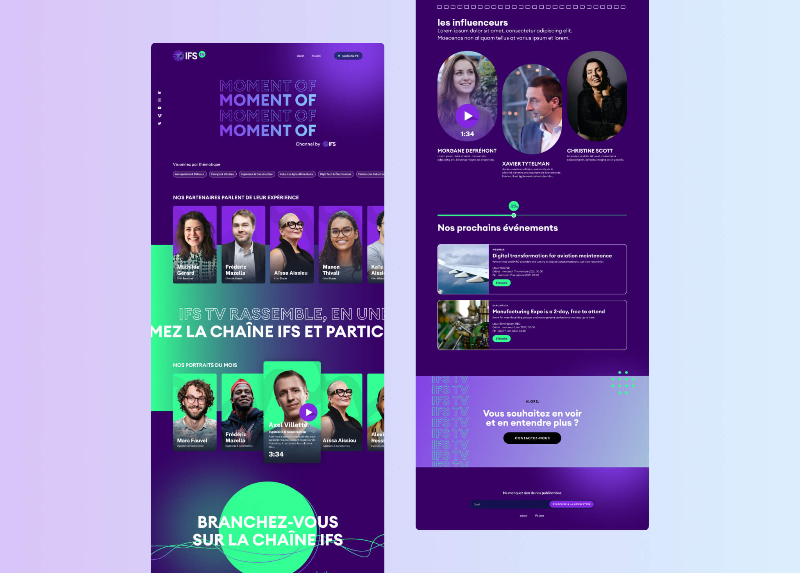
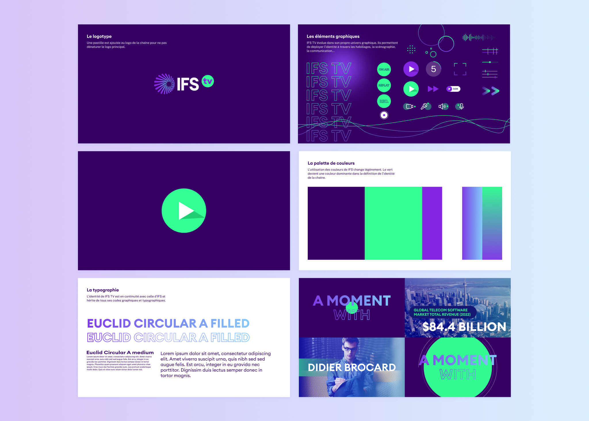
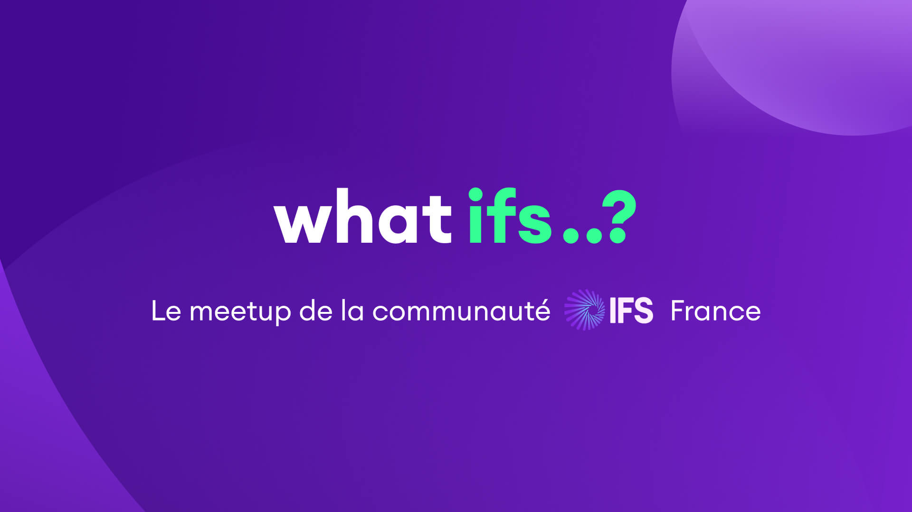
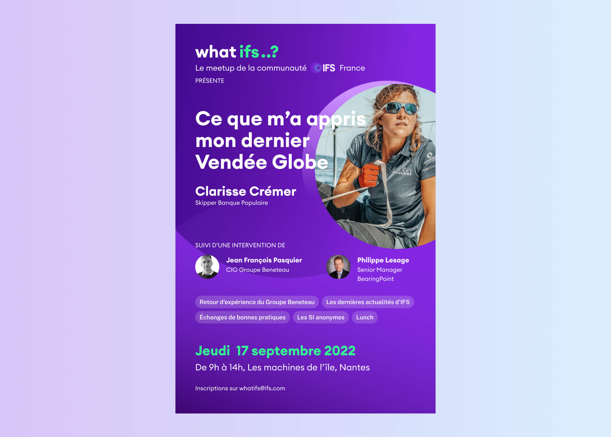
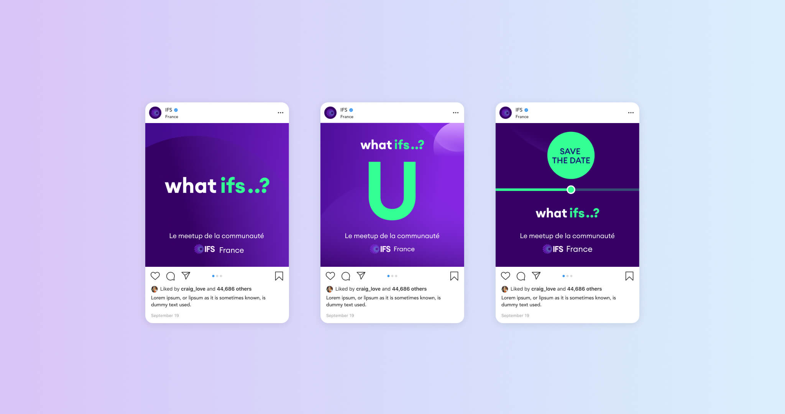
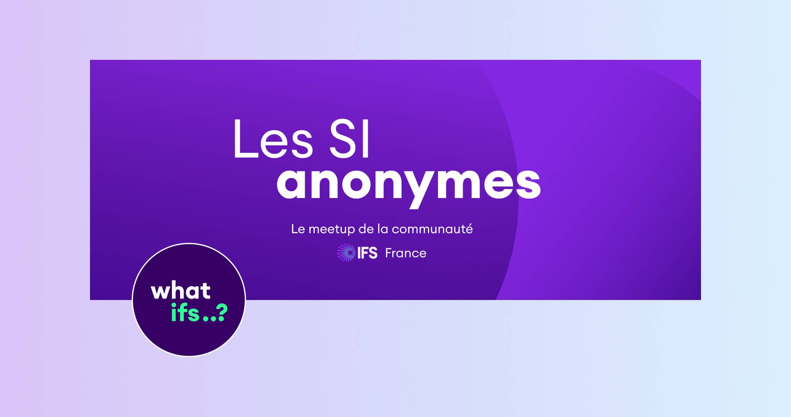
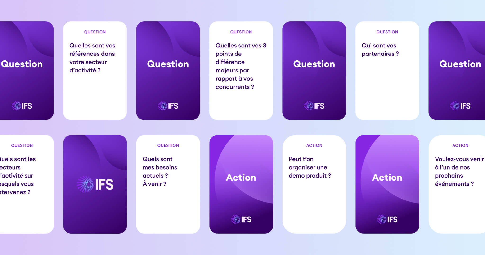
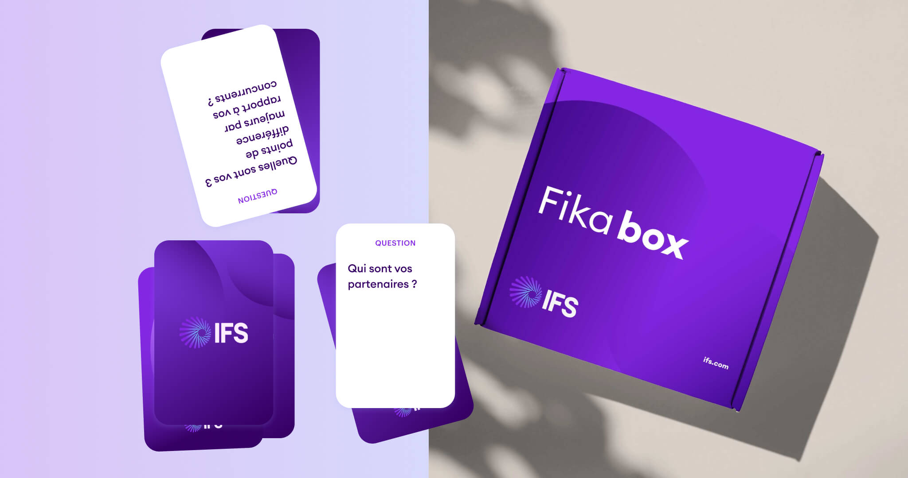
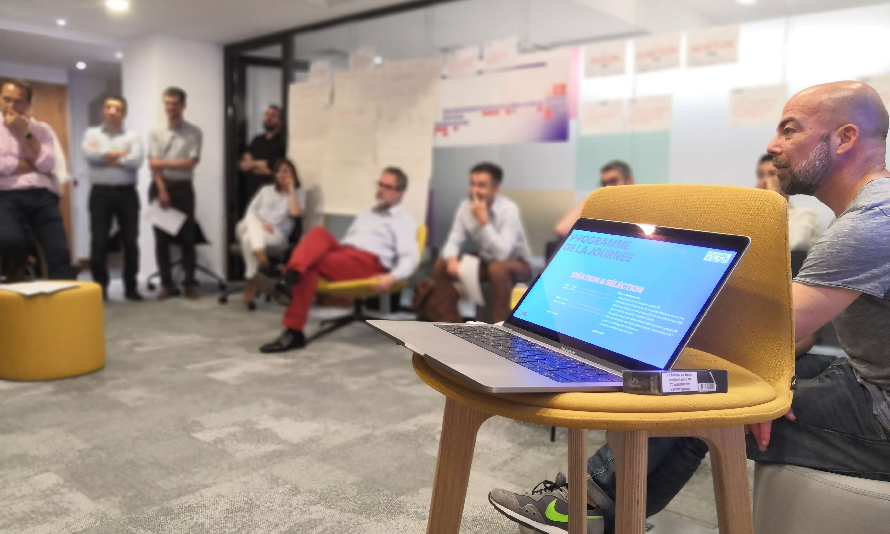
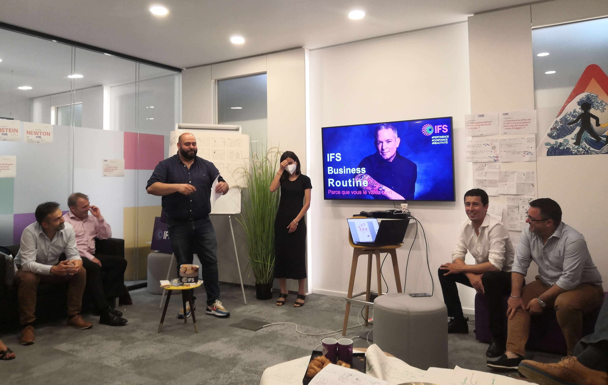